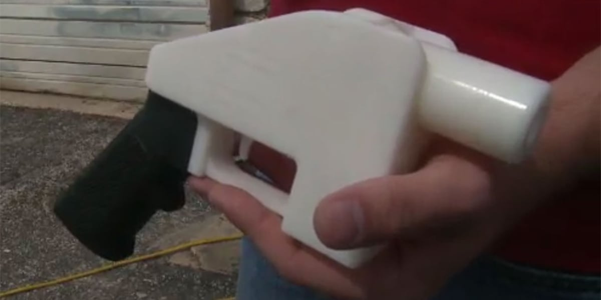
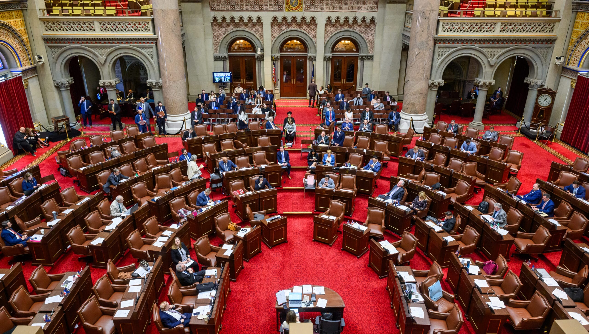

← Back to front pageLAW & MAKING3D Printing & CNC Laws
9 digest(s) · newest first
The wave of state laws targeting 3D-printed guns is reaching far beyond the ghost gun problem it claims to solve — and the definitional creep is the story worth watching. Colorado's HB 26-1144 and Washington's HB 2320 both define 3D printing as including subtractive manufacturing, which means CNC milling machines, router tables, and by some readings even conventional woodworking equipment fall under statutes originally aimed at untraceable firearms. New York's budget bill requires that every 3D printer sold in the state include "blocking technology" — firmware that scans every print file through a firearms blueprint detection algorithm and refuses to print anything flagged as a potential firearm or component. California is considering a similar mandate.
The throughline is a fundamental tension between two legitimate concerns. On one side, untraceable 3D-printed firearms are a real and growing problem for law enforcement, and the distribution of digital firearm manufacturing code is a genuine vector. On the other, a law that defines a CNC mill as a "3D printer" and requires all consumer printing hardware to include government-mandated content filtering opens a door that goes well beyond guns — it establishes a precedent for embedded surveillance and file-blocking in general-purpose manufacturing tools, with the state maintaining a database of banned files. The open-source firmware community (Klipper, Marlin, OrcaSlicer, PrusaSlicer) is directly in the crosshairs of the California proposal's compliance roster.
What to watch next: whether the federal NDAA FY2026 and HR 4143 proposals add a national layer to what is currently a state-by-state patchwork, and how the courts handle the First Amendment implications of criminalizing possession of digital firearm manufacturing code. The Adafruit and open-source hardware community response to New York's blocking technology mandate will be a leading indicator of how much practical resistance these laws face from the maker community.

 ▶Watch the video on YouTube
▶Watch the video on YouTube ▶Watch the video on YouTube
▶Watch the video on YouTubeDate saved: 2026-10-21 03:00 (PDT)
Sources: Giffords Law Center, PCMag, The Register, Colorado Legislature, Washington Legislature, KOTA TV, Adafruit, Everytown
Key findings
State laws enacted in 2026
- Colorado HB 26-1144, signed by Gov. Jared Polis in May and effective July 1, prohibits manufacturing a firearm, unfinished frame or receiver, large-capacity magazine, or rapid-fire device with a 3D printer or CNC milling machine without a federal firearms license; it also criminalizes possessing or distributing digital instructions if "circumstances indicate intent" to manufacture or distribute unlawfully. (Source)
- Washington HB 2320, signed by Gov. Bob Ferguson in March and effective July 1, prohibits using 3D printers and CNC milling machines to manufacture certain firearms and machine-gun conversion devices, and restricts the distribution of digital firearm manufacturing code; it defines "digital firearm manufacturing code" as any CAD files or other code that may be used to program a 3D printer or CNC milling machine to manufacture a firearm, frame or receiver, magazine, or unlawful firearm part. (Source)
- New York's FY 2026-2027 executive budget bill (S.9005 / A.10005), signed in May, requires all 3D printers sold or delivered in New York to include "blocking technology" — software or firmware that scans every print file through a "firearms blueprint detection algorithm" and refuses to print anything it flags as a potential firearm or component; it also criminalizes the intentional sale, distribution, or possession of digital instructions to illegally manufacture a firearm or component parts without a license, and requires the sale or transfer of any 3D printer to be done in-person. (Source)
- New Jersey previously banned 3D printing firearms without a license and also prohibited the possession of the digital code used to 3D print firearms with the intent to manufacture a firearm (AB 4975). (Source)
- Maine, Virginia, and additional states also enacted laws tightening rules around 3D-printed guns and firearms without serial numbers in 2026. (Source)
The CNC and subtractive manufacturing reach
- Colorado's law defines 3D printing as both additive AND subtractive manufacturing — meaning CNC machines, milling equipment, and router tables are legally "3D printers" under the statute; woodworkers, machinists, and engineers with no connection to firearms are pulled into a ghost gun manufacturing statute. (Source)
- New York's definition of "digital firearm manufacturing code" specifically includes "any machine capable of making three-dimensional modifications to an object from a digital design file using subtractive manufacturing" — covering CNC mills alongside additive printers. (Source)
- California already prohibits using a 3D printer to make firearms, and is considering AB 2047, which would require blocking technology on 3D printers akin to New York's law; California's AB 1263 expands liability for those who facilitate or distribute digital firearm manufacturing code. (Source)
- California law requires any person, firm, or corporation to obtain a firearm manufacturer's license from the California Department of Justice to use a CNC milling machine to manufacture a firearm; it is unlawful to sell, offer to sell, or transfer a CNC milling machine or 3D printer that has the sole or primary function of manufacturing firearms to anyone without a federal license. (Source)
Federal dimension and industry response
- The 3D Printed Gun Safety Act was introduced in the U.S. House and Senate last June as part of federal efforts to address the issue. (Source)
- Adafruit warned that New York's blocking technology requirement would cover a broad set of manufacturing machinery, not just resin and FDM printers, but also CNC mills and any machine capable of making three-dimensional modifications to an object from a digital design file using subtractive manufacturing. (Source)
- The Washington Post reported in February that the ATF had updated its rules to close some loopholes in 2022, and that several states already make it illegal to distribute files that can be used to program a 3D printer to make a firearm — Delaware, New Jersey, and California among them. (Source)
Source links
The legislative fight over who can use a 3D printer or CNC machine to make a gun has become one of the most active fronts in state-level gun policy, and the scope of what lawmakers are targeting has expanded significantly. The newest laws no longer just ban the printing of firearms — they now reach digital manufacturing code itself, the CNC milling machines that can produce firearm components, and even mandate that printers sold to consumers come with blocking technology baked in. New York became the first state to require blocking technology on all 3D printers sold, and California is actively considering a similar mandate.
This matters because it is a direct collision between decentralized manufacturing and the state's monopoly on lethal force. The gun-control side argues that 3D-printed and CNC-milled firearms — "ghost guns" with no serial numbers, no background check, no paper trail — are a loophole large enough to drive a truck through. The counterargument, from the gun-rights side, is that attaching liability to code and machine tools fundamentally transforms a consumer device into a regulated instrument, with implications that extend well beyond firearms. The Colorado law's definition of "3-dimensional printing" to include both additive and subtractive manufacturing (which covers CNC mills and lathes) signals that lawmakers are thinking about the full toolkit of digital fabrication.
What to watch next: whether the courts sustain New York's blocking-technology mandate when it takes effect (the law says "as soon as technologically feasible"), and whether federal action emerges — currently the federal government has largely left this to the states.

 ▶Watch the video on YouTube
▶Watch the video on YouTube ▶Watch the video on YouTube
▶Watch the video on YouTubeDate saved: 2026-10-20 23:15 (PDT)
Sources: Giffords Law Center, Colorado General Assembly, California State Senate, Washington State Legislature, New York State Senate
Key findings
Colorado bans 3D printing and CNC firearm manufacturing
Colorado's HB 26-1144, which became law on July 1, 2026, prohibits knowingly manufacturing a potentially functioning firearm, unfinished frame or receiver, large-capacity magazine, or rapid-fire device by 3-dimensional printing — a term the law defines to include both additive and subtractive manufacturing (covering CNC milling machines and lathes). The prohibition does not apply to federally licensed manufacturers, gunsmithing instructors, or accredited gunsmithing programs. A first offense is a class 1 misdemeanor; a second or subsequent offense is a class 5 felony. The bill also criminalizes possessing or distributing digital instructions if circumstances indicate intent to manufacture or distribute unlawfully. (Colorado General Assembly)
New York mandates blocking technology on 3D printers
New York's S. 9005, passed in 2026, became the first state law to require that all 3D printers for sale come with blocking technology to prevent the printer's use in manufacturing firearms and conversion devices. The requirement takes effect as soon as technologically feasible. The law also prohibits possessing digital firearm manufacturing code used by 3D printers to create a firearm with intent to manufacture one, or distributing such code to someone prohibited from possessing firearms or not properly licensed. (Giffords Law Center)
Washington bans digital firearm manufacturing code distribution
Washington's HB 2320 prohibits the manufacturing of certain firearms and firearm components through 3D printers or CNC milling machines, and separately establishes restrictions on the sale, transfer, and distribution of digital firearm manufacturing code. No person may sell, transfer, distribute, or offer to sell digital firearm manufacturing code for a firearm or unfinished frame or receiver to a person not licensed under federal law. No person may possess such code with intent to distribute it to an unlicensed person or with intent to manufacture a firearm using a 3D printer or CNC machine. (Washington State Legislature)
California considers blocking-tech mandate
California already prohibits using a 3D printer to make firearms, but is now considering AB 2047, which would require 3D printer manufacturers to equip printers with firearm blocking technology before sale or distribution in the state, commencing December 1, 2029. The bill requires printer manufacturers to submit attestations to the DOJ for each make and model, and makes it a crime to knowingly disable, deactivate, or circumvent firearm blocking technology with intent to manufacture firearms. (California State Senate)
New Jersey criminalizes possession of digital firearm code
New Jersey previously banned 3D printing firearms without a license and expanded its law in 2026 with AB 4975, which prohibits the possession of digital code used to 3D print firearms with the intent to manufacture a firearm. This closes a gap where a person could legally possess the code but not act on it — the new law criminalizes the possession itself when intent is present. (Giffords Law Center)
Twelve states have passed new gun safety laws in 2026
Giffords reported that a dozen states passed new gun safety laws in 2026, with ghost guns and 3D printers a significant theme. In addition to the states above, Maine required serialization of all firearms (HB 745), and Virginia required serialization and banned ghost guns not regulated as firearms under federal law (HB 40). Virginia also enacted an industry accountability bill, becoming the 11th state to create standards of conduct for the gun industry. (Giffords Law Center)
Source links

Date saved: 2026-10-20 18:00 (PDT)
Sources: Congress.gov, Giffords Law Center, PCMag, Washington State Legislature, California Legislative Information, New York State Legislature, Colorado General Assembly
Key findings
Federal bill: 3D Printed Gun Safety Act of 2025
- S.2165 — 119th Congress (2025-2026): The 3D Printed Gun Safety Act would amend Chapter 44 of Title 18 of the U.S. Code to prohibit the distribution of 3D printer plans for printing firearms. The bill makes it unlawful for any person to "intentionally distribute, over the internet or by means of the World Wide Web, digital instructions in the form of Computer Aided Design files or other code that can automatically program a 3-dimensional printer or similar device to produce a firearm or complete a firearm from an unfinished frame or receiver." Congress finds that "recent technological developments have allowed for the 3D printing of firearms and firearm parts, including parts made out of plastic, by unlicensed individuals in possession of relatively inexpensive 3D printers." (Source)
California: most aggressive state-level framework
- Giffords Law Center (updated Feb 12, 2026): California requires any person, firm, or corporation to obtain a firearm manufacturer's license from the California DOJ to legally manufacture more than three firearms in a calendar year — or to use a 3D printer to manufacture any number of firearms. Effective June 30, 2022, California also requires at minimum a valid federal firearms manufacturer or importer license to use a CNC milling machine to manufacture a firearm, including a completed or unfinished frame or receiver. California law now makes it generally unlawful to sell, offer to sell, or transfer a CNC milling machine or 3D printer that has the sole or primary function of manufacturing firearms to anyone without a federal firearms manufacturer or importer license — and makes it unlawful for unlicensed people to possess, purchase, or receive such machines. (Source)
- AB 1263 (2025): Updated California's ghost gun regulations to clarify and strengthen laws relating to the distribution of digital firearm manufacturing codes — the code used to instruct a 3D printer or CNC milling machine to produce a firearm. The law now also prohibits distribution of codes relating to rapid-fire devices and large capacity magazines. AB 1263 includes a rebuttable presumption that a website owner violated the law if their site makes digital firearm manufacturing code available and encourages individuals to upload, disseminate, or use it to manufacture firearms. (Source)
- AB 2047 (proposed): Would require 3D printers sold in California to incorporate technology to detect and block the production of firearm components — uploaded design files would be scrutinized by AI programs, supplemented by human oversight. (Source)
Washington State: upstream regulation of digital files
- Washington State HB 2320 (enacted 2025): Washington crossed a significant legal threshold by regulating not just the physical firearms but the digital ecosystem that makes them possible. The law makes it unlawful to manufacture a frame or receiver using a 3D printer, CNC milling machine, or other means without a federal firearms manufacturer license. It prohibits selling, transferring, distributing, or offering to sell "digital firearm manufacturing code" — defined as any digital instructions in the form of CAD files or other code that may be used to program a 3D printer or CNC milling machine to manufacture a firearm, frame or receiver, unfinished frame or receiver, magazine, or unlawful firearm part — to an unlicensed person. It also prohibits possessing such code with intent to distribute to an unlicensed person or intent to manufacture a firearm. (Source)
New York, Colorado, and the wider trend
- New York (signed May 2026): A first-of-its-kind law requires that 3D printers include blocking technology; uploaded parts files are reviewed by AI programs with an additional layer of human intervention. (Source)
- Colorado HB26-1144 (signed 2026): Takes a more direct route, criminalizing the manufacture of certain firearms and parts using 3D printing. (Source)
- PCMag analysis: "The government's ghost gun battle is taking aim at something much bigger: innovation." Washington's HB 2320 "didn't just target untraceable firearms — it reached upstream into the ecosystem that makes them possible, regulating digital firearm files, restricting their distribution, and explicitly pulling 3D printers and CNC machines into the legal framework." California's AB 2047 "would require printers to actively scan and block certain designs." The broader concern: these measures could fundamentally reshape the 3D printing and digital manufacturing landscape, extending legal liability upstream to the tools and files rather than just the final product. (Source)
- CNC and subtractive manufacturing: California explicitly includes CNC milling machines in its licensing requirements, recognizing these machines can carve firearms from metal blocks. Washington's law similarly covers "CNC milling machine" alongside 3D printers. The legal framework is increasingly treating additive and subtractive digital manufacturing as functionally equivalent for regulatory purposes. (Source)
Source links

Date saved: 2026-10-20 11:00 (PDT)
Sources: Los Angeles Times, Stateline, Washington State Legislature, 3D Printing Industry, Everytown Law
San Diego County sued one of the world's largest 3D-printing filament manufacturers on October 5, alleging the company made a "strategic business choice" to market and sell plastic to Californians for the express purpose of building illegal weapons. The county counsel brought the case with the Giffords Law Center, and the complaint concedes filament itself is not illegal (Los Angeles Times, October 10; Techspot). The county seeks civil penalties, disgorgement of revenue and an injunction — not a ban on filament sales.
The target of all this activity is real: from 2017 through 2023, law enforcement recovered and traced roughly 92,700 privately made firearms, linked to 1,692 homicide-related offenses and 4,106 other violent crime offenses (ATF data via Stateline, June 13). What is new is where the law is climbing: past the gun, past the design file, past the machine, and now to the raw material.
Up the stack: guns, then files, then machines, then plastic
Washington's HB 2320, passed 57-39 on February 16 and signed in March, prohibits manufacturing machine guns, bump-fire stocks, undetectable firearms and short-barreled weapons "including by use of a 3D printer, CNC milling machine, or other means," and reaches unfinished frames and receivers — unless the maker holds a federal firearms licence. It also bans selling, transferring or distributing "digital firearm manufacturing code," defined as any CAD files or digital instructions that may be used to program a 3D printer or CNC machine to manufacture a firearm, frame, receiver, magazine or unlawful part, and criminalises possessing such code with intent to distribute it to an unlicensed person (House bill report). The bill carries an emergency clause; Section 3 takes effect June 30, 2027.
Colorado, Maine, New Jersey, New York, Virginia and Washington all enacted 3D-printed-gun laws this year (Stateline, June 13). Colorado's HB26-1144, signed in May, criminalises manufacturing firearms or components with 3D printers or CNC machines without a federal licence. New York went further into the hardware: printers sold in the state must carry blocking technology if a state working group finds it feasible, with a $5,000 civil penalty per product.
California's AB 2047 would require printers sold in the state to detect and block firearm components. It passed the Assembly in June; Newsom signed an amended version in September — but none of it binds anyone until ASTM International, a private standards body, publishes a technical standard. The state Justice Department must check quarterly for that standard, starting no later than July 1, 2027, and if no standard appears by July 1, 2029 the duty lapses altogether. Printers already owned are exempt (3D Printing Industry).
What the official story leaves out
The crime-control rationale and the machinery being regulated have come apart. Under Washington's definition, the person who shares an STL file is committing the same graded offence as the person who prints the gun: civil infraction, then misdemeanour, then gross misdemeanour, with manufacturing machine-gun parts a class C felony. Testimony in the bill's own record warned that the definition could reach "models that are just geometry data without tool path information," and that a community makerspace "would need to remove their 3D printers to avoid criminal liability" (House bill report). The NRA's Institute for Legislative Action opposed the bill; the industry's argument is that codes for unlicensed gun-making are purely functional and therefore not speech — a position the Third Circuit accepted on February 12, 2026 in Defense Distributed v. Attorney General of New Jersey, holding that "purely functional code with no actual or intended expressive use" gets no First Amendment protection (Everytown Law)).
Both halves of the official story are incomplete. The blocker laws exempt printers already in homes and depend on ASTM setting a standard nobody can be forced to write — a statute with a built-in expiry. Meanwhile the enforcement frontier has moved to marketing: the Polymaker suit alleges a company's sales pitch, not a product, is the violation. At least 16 states now have ghost-gun regulations and at least eight plus DC specifically outlaw 3D-printed guns, according to Everytown for Gun Safety — an advocacy group's count, not a government tally. None of that changes the trace data: the weapons are still being recovered.
What readers can do
- If you run a makerspace or school lab in Washington: get a written reading of HB 2320's "digital firearm manufacturing code" definition before Section 3 takes effect June 30, 2027, and ask counsel this exact question: does our shared file library create "possession with intent to distribute" if a member downloads a firearm model?
- If you are in California: ask your state senator this exact question — will ASTM publish the blocking-technology standard by July 1, 2027, and what happens to AB 2047 if it does not? A law that expires itself in 2029 is worth knowing about before it is used as a model.
- If a firearm is recovered in your community, ask law enforcement whether it was traced as a privately made firearm. ATF trace counts are the only public measure of this problem.
- If you sell filament, CAD files or printers, read the Polymaker complaint before your next marketing campaign: the alleged violation is what the company said about its customers, not what it sold them.
- Report illegal ghost gun sales or trafficking to the ATF tip line at atf.gov/tips.
Source links

Date saved: 2026-10-20 03:00 (PDT)
Sources: Washington State Legislature, PCMag, California AG, PC Magazine Opinion
Key findings
Washington State HB 2320 — landmark upstream regulation
- Washington State Legislature (March 2026): House Bill 2320, signed into law, prohibits anyone from manufacturing a machine gun, bump-fire stock, undetectable firearm, short-barreled shotgun, or short-barreled rifle — including by use of a 3D printer or CNC milling machine — or any part designed solely for converting a weapon into such a firearm. It also prohibits knowingly or recklessly manufacturing a frame or receiver (or unfinished frame/receiver) via 3D printer or CNC unless the person is a federally licensed firearms manufacturer. Critically, the law bans selling, transferring, or distributing "digital firearm manufacturing code" — defined as any CAD files or digital instructions that may be used to program a 3D printer or CNC machine to manufacture a firearm, frame, receiver, magazine, or unlawful firearm part — to anyone not federally licensed. Possession of such code with intent to distribute or manufacture is also criminalized. (Source)
California — liability expansion and content-filter mandates
- California Attorney General (2025): Assembly Bill 1263, effective January 1, 2026, updates the definition of "digital firearm manufacturing code" to include any CAD/CAM files or digital instructions that may be used to program a CNC milling machine, 3D printer, or similar machine to manufacture firearms or precursor parts. The law expands civil liability for those who knowingly distribute such code to unlicensed persons. Additionally, proposed Assembly Bill 2047 would require 3D printers sold in California to incorporate technology to detect and block the production of firearm components — uploaded design files would be scrutinized by AI programs with human oversight. (Source)
- PCMag (2026): California's AB 2047 represents a mandate for printers to actively scan and block certain designs — a content-filter approach to hardware regulation. If passed, this would make California the second state after New York to require such blocking technology. (Source)
New York and Colorado — first-of-their-kind laws
- PCMag (2026): New York signed a first-of-its-kind law in May requiring 3D printer blocking technology for firearm components. Uploaded parts files will be reviewed by AI programs with an additional layer of human intervention. Colorado's HB26-1144, signed into law and awaiting governor approval at time of reporting, takes a more direct route by criminalizing the manufacture of certain firearms and parts using 3D printing. (Source)
- PCMag (2026): In both California and New York, legislators are considering proposals that would require printers to recognize and reject weapon components — a trend that could spread to other states. The Washington State law is notable because it reached upstream into the digital ecosystem, regulating files and explicitly including both 3D printers and CNC machines within the legal framework. (Source)
Broader implications for digital manufacturing
- PCMag Opinion (2026): The ghost gun crackdown is "quietly threatening the future of 3D printing" by regulating not just guns but the digital files and manufacturing hardware that make them possible. The Washington State law's definition of "digital firearm manufacturing code" — any CAD files or instructions that may be used to program a 3D printer or CNC to manufacture a firearm — could be interpreted broadly, raising concerns about chilling effects on legitimate digital manufacturing, prototyping, and hobbyist use of 3D printers and CNC mills. (Source)
Source links
Date saved: 2026-10-19 18:00 (PDT)
Sources: KOTA TV, PCMag UK, Washington State Legislature, Colorado General Assembly
Key findings
State-Level Restrictions on 3D-Printed Firearms
- KOTA TV (Jun 13, 2026): At least six states this year have outlawed or imposed regulations on 3D-printed guns: Colorado, Maine, New Jersey, New York, Virginia, and Washington. The new laws include restrictions on manufacturing untraceable firearms, limits on distribution of digital gun-design files, and requirements aimed at preventing the use of 3D printers to produce gun parts. Maine's law prohibits sale of guns without serial numbers and requires serial numbers on all privately manufactured firearms. New Jersey prohibits unlicensed individuals from possessing digital instructions used to 3D-print firearms. (Source)
- Colorado General Assembly (2026): Colorado's HB26-1144 makes it a criminal offense for private citizens to manufacture firearms or firearm components using 3D printers or CNC machines unless they are federally licensed manufacturers. The bill also criminalizes possessing or distributing digital instructions if circumstances indicate intent to manufacture or distribute unlawfully. (Source)
Washington State's Landmark HB 2320
- Washington State Legislature (2026): Washington's HB 2320 (Chapter 203, Laws of 2026) prohibits manufacturing — including by 3D printer, CNC milling machine, or other means — any machine gun, bump-fire stock, undetectable firearm, short-barreled shotgun, or short-barreled rifle, or parts designed for converting weapons into such. It bans manufacturing untraceable firearms with intent to sell, and prohibits possessing or distributing 'digital firearm manufacturing code' — defined as any CAD files or digital instructions that may be used to program a 3D printer or CNC machine to manufacture a firearm or parts. (Source)
- PCMag UK (Mar 2026): With the passage of HB 2320, Washington State crossed a significant line by reaching upstream into the ecosystem that makes untraceable firearms possible — regulating digital firearm files, restricting their distribution, and explicitly pulling 3D printers and CNC machines into the legal framework. California has moved similarly with AB 1263 (expanding liability for digital firearm code distribution) and proposed AB 2047 (requiring 3D printers sold in the state to include blocking technology). New York's state budget includes a law requiring 3D printers sold in the state to include blocking technology if technologically feasible. (Source)
Printer Content-Filter Mandates
- KOTA TV (Jun 13, 2026): New York's new law, passed as part of the state budget, will require 3D printers sold in the state to include blocking technology — if a state working group determines it technologically feasible — that prevents production of firearms and illegal gun parts. California's proposed AB 2047 takes a similar approach, requiring printers to recognize and refuse to produce weapon components. These printer-level mandates represent a significant escalation beyond banning the weapons themselves. (Source)
- PCMag UK (Mar 2026): The trend of mandating content-filtering in consumer 3D printers is spreading: both California and New York are exploring proposals that would require printers themselves to detect and block attempts to print firearms, gun parts, and machine-gun conversion devices — effectively turning consumer manufacturing tools into government-regulated gatekeepers. (Source)
Source links

Date saved: 2026-10-19 03:00 (PDT)
Sources: Washington State Legislature, Congress.gov, PCMag, PC Mag UK
Key findings
Washington State HB 2320 — broad CNC and 3D printer restrictions
- Washington State Legislature (2026): HB 2320, signed into law, prohibits the manufacturing of certain firearms and firearm components through the use of a three-dimensional printer or computer numerical control (CNC) milling machine, subject to exceptions. The law prohibits the sale, transfer, or distribution of certain digital firearm manufacturing code. It restricts: (1) the sale, transfer, and distribution of digital firearm manufacturing code; and (2) manufacturing frames and receivers and unfinished frames and receivers through the use of a 3D printer, CNC milling machine, or other means. No person may manufacture, including by use of a 3D printer, CNC milling machine, or other means, any machine gun, bump-fire stock, undetectable firearm, short-barreled shotgun, or short-barreled rifle — or any part designed for converting a weapon into those categories. No person may knowingly or recklessly manufacture a frame or receiver by use of a 3D printer, CNC milling machine, or other means, unless licensed to manufacture firearms under federal law. No person may sell, transfer, distribute, or offer to sell digital firearm manufacturing code. The law defines "digital firearm manufacturing code" as any digital instructions in the form of CAD files or other code that may be used to program a 3D printer or CNC milling machine to manufacture a firearm, frame, receiver, magazine, or unlawful firearm part. (Source)
Federal legislation: 3D Printed Gun Safety Act
- Congress.gov (2025-2026): The 3D Printed Gun Safety Act of 2025 (H.R. 4143 in the House, S. 2165 in the Senate) would amend chapter 44 of title 18, United States Code, to prohibit the distribution of 3D printer plans for the printing of firearms. It would make it unlawful for any person to intentionally distribute, over the internet or by means of the World Wide Web, digital instructions in the form of CAD files or other code that can automatically program a 3-dimensional printer or similar device to produce a firearm or complete a firearm from an unfinished frame or receiver. Introduced June 25, 2025. (Source)
State-level printer content-filter mandates
- PCMag (2026): With the passage of Washington's HB 2320, the state reached upstream into the ecosystem that makes ghost guns possible, regulating digital firearm files, restricting their distribution, and explicitly pulling 3D printers and CNC machines into the legal framework. California has moved in a similar direction with AB 1263, which expands liability for those who facilitate or distribute digital firearm manufacturing code, and with the proposed AB 2047, which would require 3D printers sold in the state to include blocking technology capable of detecting and preventing the production of firearm components — uploaded parts files would be reviewed by AI programs with an additional layer of human intervention. A first-of-its-kind law in New York, signed in May, requires that blocking tech; Colorado's HB26-1144, signed into law, takes a more direct route, criminalizing the manufacture of certain firearms and parts using 3D printing. California's proposed AB 2047 would require printers to actively scan and block certain designs. (Source)
- PCMag UK: The enactment of HB 2320 signifies more than just an effort to regulate untraceable firearms — it extends its reach upstream, regulating the digital files necessary for firearm creation, limiting their distribution, and explicitly including 3D printers and CNC machines within the legal framework. In both California and New York, legislators are considering proposals that would require printers to recognize and reject weapon components. If these measures pass, uploaded design files would be scrutinized by AI programs, supplemented by human oversight. (Source)
Source links

 ▶Watch the video on YouTube
▶Watch the video on YouTubeDate saved: 2026-10-18 18:00 (PDT)
Sources: PCMag, News From The States (Stateline), Washington State Legislature, California Legislature, PC Mag Opinion
Key findings
Washington state leads with comprehensive law
- Washington State Legislature (Mar 2026): Governor Bob Ferguson signed HB 2320, a sweeping law that prohibits manufacturing certain firearms and firearm components through use of a 3D printer or CNC milling machine. The law prohibits the sale, transfer, or distribution of certain digital firearm manufacturing code — defined as any digital instructions in the form of CAD files or other code that may be used to program a 3D printer or CNC milling machine to manufacture a firearm, frame, receiver, magazine, or unlawful firearm part. It criminalizes manufacturing frames and receivers via 3D printer or CNC machine unless the person is licensed under federal law. Possessing digital firearm manufacturing code with intent to distribute to an unlicensed person is also prohibited. ("Digital firearm manufacturing code" means any digital instructions in the form of computer-aided design files or other code stored and displayed in electronic format as a digital model that may be used to program a 3D printer or CNC milling machine to manufacture or produce a firearm.) (Source)
California, New York push printer content-filter mandates
- PCMag (2026): California's AB 1263 increases liability for those who facilitate or share digital firearm manufacturing code. California's proposed AB 2047 would require consumer 3D printers sold in the state to include technology capable of detecting and blocking attempts to print firearms, gun parts, and machine-gun conversion devices. The proposal would require the California Department of Justice to publicly release performance and technology standards by 2028. Uploaded design files would be scrutinized by AI programs, supplemented by human oversight. (Source)
- News From The States (Jun 11, 2026): As part of New York's state budget approved in 2026, a new law requires 3D printers sold in the state to include blocking technology, if a state working group determines it to be technologically feasible, that prevents the production of firearms and illegal gun parts. Violating the law carries a civil penalty of $5,000 per product. California lawmakers are considering a similar proposal (AB 2047), which passed the Assembly and is pending in the Senate. (Source)
Other states tighten restrictions
- News From The States (Jun 11, 2026): Colorado's HB26-1144, signed by Gov. Jared Polis in May, prohibits using 3D printers and similar manufacturing technologies to make firearms, unfinished gun parts, large-capacity magazines, and rapid-fire devices. Virginia Gov. Abigail Spanberger signed a law in April prohibiting the manufacture, sale, or possession of unserialized firearms, including unfinished frames or receivers. Maine enacted a law in January prohibiting the sale of guns without serial numbers and requiring serial numbers on all privately manufactured firearms, including 3D-printed guns. New Jersey's new law prohibits unlicensed individuals from possessing digital instructions used to 3D-print firearms. Including this year's measures, at least 16 states have regulations in place for ghost guns, and at least eight states and the District of Columbia specifically outlaw 3D-printed guns, according to Everytown for Gun Safety. (Source)
Legal challenges and free speech concerns
- PCMag (2026): Gun rights groups have sued over state efforts to regulate "ghost guns" and the online distribution of firearm-design files. Some advocates argue that restrictions on 3D-printed guns violate free speech protections by limiting the spread of digital information. The Second Amendment Foundation argues that outright bans are unlikely to stop criminal activity and raise significant constitutional concerns. Some argue that Americans have long been allowed under federal law to manufacture firearms for personal use. Gun control advocates counter that these policies are intended to get ahead of a rapidly evolving threat. (Source)
- News From The States (Jun 11, 2026): A Minnesota proposal to regulate 3D-printed firearms (HF 3407) did not advance out of the legislature before lawmakers adjourned in May. The proposal would have banned the sale and possession of ghost guns, limited 3D printing of firearms, prohibited the distribution of firearm design files, and imposed additional requirements on serial numbers. In both California and New York, legislators are considering proposals that would require printers to recognize and reject weapon components, with uploaded files reviewed by AI programs and human oversight. (Source)
Broader manufacturing implications
- PCMag (2026): The ghost gun crackdown is "quietly threatening the future of 3D printing." Washington's HB 2320 didn't just target untraceable firearms — it reached upstream into the ecosystem that makes them possible, regulating digital firearm files, restricting their distribution, and explicitly pulling 3D printers and CNC machines into the legal framework. California's AB 1263 expands liability for those who facilitate or distribute digital firearm manufacturing code. The trend raises questions about whether content-filter mandates on general-purpose manufacturing tools could set a precedent for regulating other types of digital manufacturing. (Source)
Source links

Date saved: 2026-10-18 14:33 (PDT)
Sources: CA DOJ, Washington State Legislature, Giffords Law Center, PCMag, NY law firm alerts, Colorado Legislature
Scope
Laws targeting 3D printers, CNC milling machines, lathes, and digital manufacturing code — overwhelmingly focused on firearm ("ghost gun") production, but with growing reach into the machines and files themselves.
Federal / general
- Federal law: unlicensed manufacture of firearms (incl. by 3D printer or CNC) illegal; undetectable firearms act applies. Frames/receivers (incl. unfinished) must be serialized by licensed manufacturers. "Digital firearm manufacturing code" = CAD files/instructions that program a 3D printer or CNC machine to make firearms/parts.
State laws
California
- Penal Code §29185: No person other than a state-licensed firearms manufacturer may use a CNC machine or 3D printer to manufacture a firearm; unlawful to sell/transfer/possess a CNC milling machine or 3D printer whose sole or primary function is manufacturing firearms (effective June 30, 2022 for CNC).
- License required to manufacture 3+ firearms/year, or any number via 3D printer.
- AB 1263 + SB 704 (effective Jan 1, 2026): Update definitions of "firearm accessory" and "firearm manufacturing machine" under the Firearm Industry Responsibility Act; new standards for sale of firearm barrels.
- Effective Jan 1, 2026: Expanded criminal and civil liability for facilitating unlawful firearm manufacture — sharing/distributing digital manufacturing files to unlicensed individuals; aiding/abetting use of CNC machines or 3D printers.
- AB 2047 (proposed, 2026): Would mandate 3D printers sold in CA embed technology to detect and block printing of firearm components.
- 2025 updates strengthened rules on distribution of digital firearm manufacturing code.
Washington State — HB 2320 (2025-26)
- Prohibits manufacturing certain firearms/components via 3D printer or CNC milling machine.
- Bans manufacture of untraceable firearms (with or without intent to sell).
- Bans knowing/reckless manufacture of frames/receivers (finished or unfinished) by 3D printer/CNC unless federally licensed.
- Bans sale/transfer/distribution of "digital firearm manufacturing code" to unlicensed persons; bans possessing such code with intent to distribute or to manufacture.
- Covers machine guns, bump-fire stocks, undetectable firearms, SBRs/shotguns made by any means incl. 3D/CNC.
New York — 2026 proposals (Hochul State of the State)
- Would require all 3D printers sold in NY to include software safeguards blocking production of firearms/components.
- Criminalize intentional distribution/possession of digital files used to 3D-print firearms or key components (incl. auto sears).
- Elevate 3D-printed firearm/component manufacturing to felony offenses — even if no completed firearm results.
- Minimum safety standards for 3D printer manufacturers selling into NY.
Colorado — HB26-1144 (2026)
- Prohibits 3D printing of firearm frames and receivers; criminalizes manufacturing certain firearms and parts via 3D printing. Passed House Judiciary Feb 2026; awaiting/pending governor action as of report date.
Industry pushback
- PCMag: Critics argue these laws reach "something much bigger: innovation" — regulating upstream digital files and explicitly folding 3D printers and CNC machines into firearms law. Printer-mandated gun-detection software in CA/NY proposals is seen as a precedent for scanning/blocking any regulated object. (Source)
Key takeaways
1. Trend: from regulating the firearm → to regulating the machine (3D printers, CNC) → to regulating the digital file/code.
2. "Firearm manufacturing machine" is now a defined legal category (CA) covering 3D printers and CNC mills marketed/intended for gun production.
3. Mandatory printer-level content filtering (CA AB 2047, NY Hochul proposal) would be the first peacetime US mandate for consumer machines to block specific outputs.
4. Lathes/subtractive manufacturing generally remain unregulated except where machines meet the "sole or primary function" firearm-manufacturing test or are used to make regulated firearms.
Source links
// Get the brief by email
Twice-daily briefs — the same sourced reporting, in your inbox the moment it’s published. No ads, no trackers, one-click unsubscribe.
The email edition opens shortly — until then the RSS feed lands every brief the moment it’s published.
// Donate
If this brief is worth something to you, scan with your Zelle app.
Tap the code to open it full size.